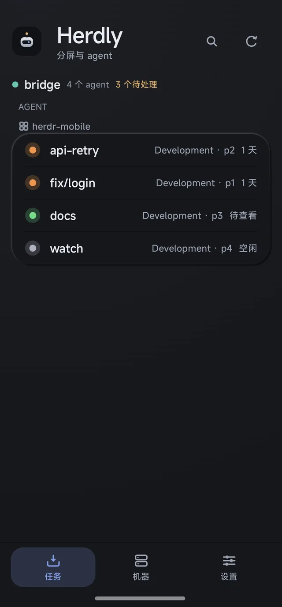
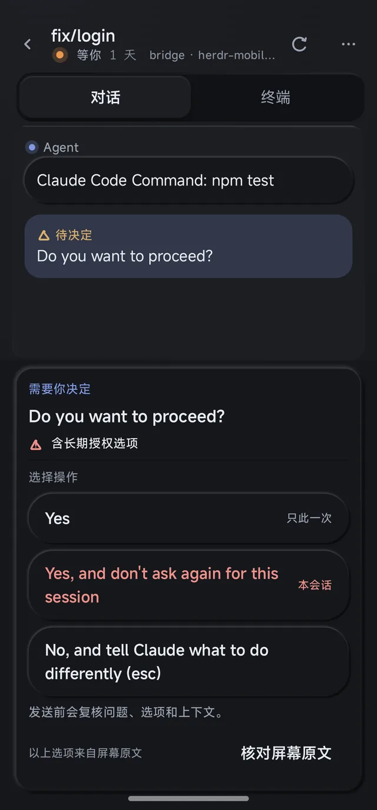
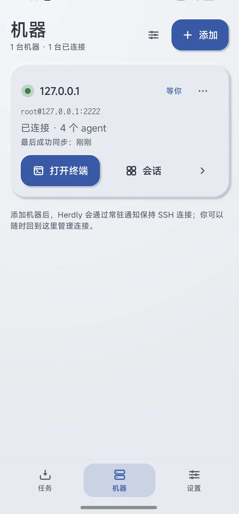
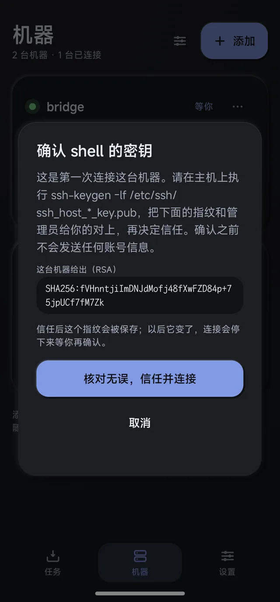
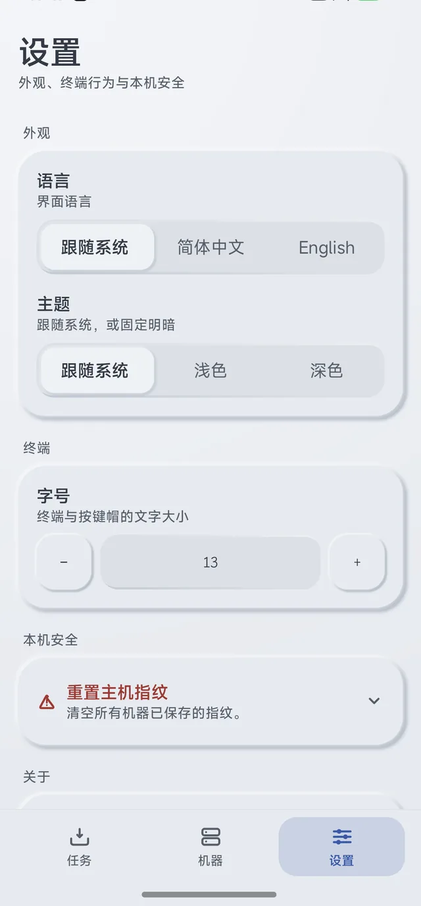

01
一个列表，回答「现在该看谁」
等你决定的排在最前
agent 不是在跑就是在等你。列表按紧急度排：需要你 > 完成未看 > 工作中 > 空闲，并写清它属于哪台机器、哪个工作区、哪个分屏。
完成 ≠ 已看过跑完的 agent 只在你还没看过那一屏时才算「待查看」；进过一次就记为看过，同一分屏在列表、机器页和通知里同时安静下来。
按需提醒被阻塞一定提醒；只是完成时，只有你没看着那一屏才提醒。重连不会把一堆旧状态补发成通知。

02
审批看原文，不看你猜的摘要
选项就是屏幕上那几行字
Herdly 不替你重写 agent 的问题。它把命令原文、完整选项和授权范围原样摆出来：只此一次、本会话、还是永久。长期授权单独标红，发送前再核对一次问题与上下文。
两种读法对话模式读内容，终端模式看原始屏幕，随时切换；解析不确定时它会说，而不是硬编一个漂亮的界面。
不替你决定没有自动批准，没有后台替你按键。每一次发送都是你点的。

03
先是个合格的终端
手机上少见的完整度
自己写的 VT 解析：16/256/真彩色、粗体斜体下划线、备用屏幕（vim、less、htop、tmux 都能用）、5000 行回滚、括号粘贴、查找与复制。
按键条Ctrl / Alt / Esc / Tab / ⇧Tab / ⌫ / 方向 / PgUp / PgDn 常驻两排，长按连发；双指缩放字号，双击补 Tab。
状态来自程序解析 OSC 7501，程序自己报 working / blocked / 进度时才显示状态条——不靠猜屏幕。
断线不丢事前台服务保持连接，网络恢复按 1/2/4/8 秒退避重连，并告诉你第几次；密码错误这类不会重试的问题直接说原因。

04
凭据与信任留在本机
第一次连接一定问你
首次连接先显示主机密钥指纹（并标出算法），你核对确认后才发送凭据。之后指纹变了，连接停下来等你再确认——不会静默信任。
加密保存密码与私钥用 Android Keystore 派生的密钥加密后存本机，不上传，不参与备份。
可核对指纹算法与 ssh-keygen 一致，方便你和主机上的输出逐字对比。

05
它不做的事
没有云端中转
SSH 从手机直连你的机器。没有我们的服务器，也没有账号。
没有遥测
不上报使用数据、崩溃日志或终端内容。唯一的联网请求是你主动点的「检查更新」。
不自动批准
不会在后台替你回答 agent 的问题，也不会批量操作多个 agent。
只做前台该做的
常驻通知只用来保持 SSH 连接；提醒只在你没看着那一屏时出现。
06
设置里只有习惯
语言、主题、字号，就这些
能改的是你的习惯：界面语言、浅色或深色、终端字号。排版节奏、输入方式、按键栏层数这类决定由产品负责——用开关把设计问题推给用户，等于同时交付两套没调好的界面。
中英双语全部界面、通知与错误文案都有两种语言，应用内即时切换，不重建页面。
安全项不可关首次连接必须核对指纹、指纹变化必须停下、凭据不可导出——这些没有开关。

07
装上，连一台机器
- 下载最新 APK 并安装（Android 8.0 及以上，允许安装未知来源应用）。
- 在「机器」里添加主机：地址、端口、用户名，密码或私钥。
- 第一次连接核对指纹，确认后连接；「打开终端」就能用。
- 想让 agent 进列表：在主机上装 Herdr，确认
herdr remote-api-bridge --check输出herdr-api-bridge-v1。没有它，终端照样能用。
从源码构建
# JDK 21 ./gradlew :app:assembleDebug # 单元测试 · Lint ./gradlew :app:testDebugUnitTest :app:lintDebug # 回环模拟主机（不执行本地命令） python tools/dev_fake_ssh.py --canned
Kotlin · Jetpack Compose · JSch · 自绘设计系统，无第三方 UI 库。